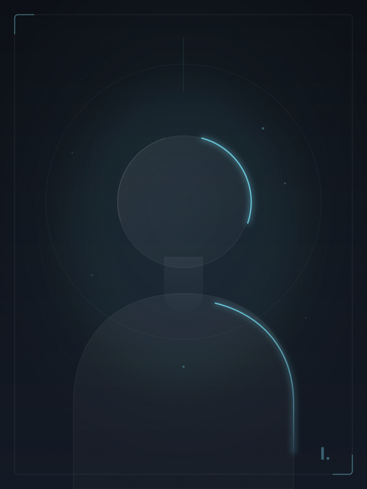

01 — Biography

東京を拠点に活動するデザイナー、Idatsukaです。UI/UXデザイン、ブランディング、Webデザインを専門としています。
私のデザインの哲学は「引き算」。語りすぎないこと。飾らないこと。情報と感情の本質だけを残して、あとは余白に委ねること。
白と黒の間にある無数のグレーに、ほとんどのデザインの答えがあると考えています。色に頼らず、構造とタイポグラフィで語るデザインを続けています。
音楽、建築、写真からインスピレーションを受け、それを静かなデジタル体験に翻訳することが私の仕事です。
02 — Skills
UI / UX Design
Figma · Prototyping
User Research · IA
User Research · IA
Branding
Logo · Identity
Brand Guidelines
Brand Guidelines
Web Design
HTML · CSS · JS
Responsive
Responsive
Motion Design
After Effects · Lottie
CSS Animation
CSS Animation
Illustration
Procreate · Illustrator
Photography
Art Direction
Lightroom
Lightroom
03 — Career
2022 —
Senior UI/UX Designer
Company Name · Tokyo
デジタルプロダクトのデザイン全般を担当。デザインシステムの構築、チームのデザイン品質向上をリード。
2019 — 22
UI Designer
Previous Company · Tokyo
スタートアップのプロダクトデザインを担当。ゼロからビジュアルを設計し、PMFに貢献。
2015 — 19
Graphic Designer
Design Studio · Tokyo
ブランディング、印刷物、Webデザインなど幅広いプロジェクトを経験。デザインの基礎を培った。